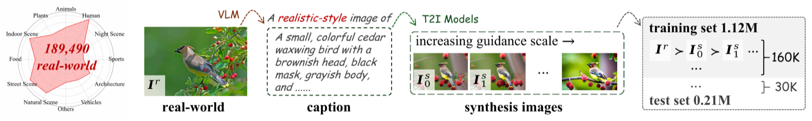
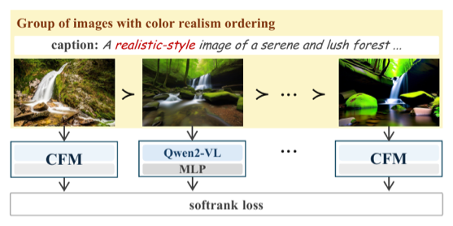
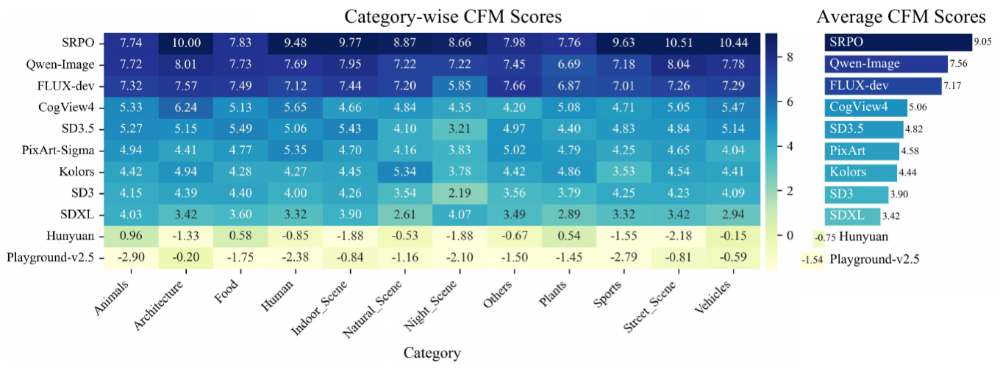
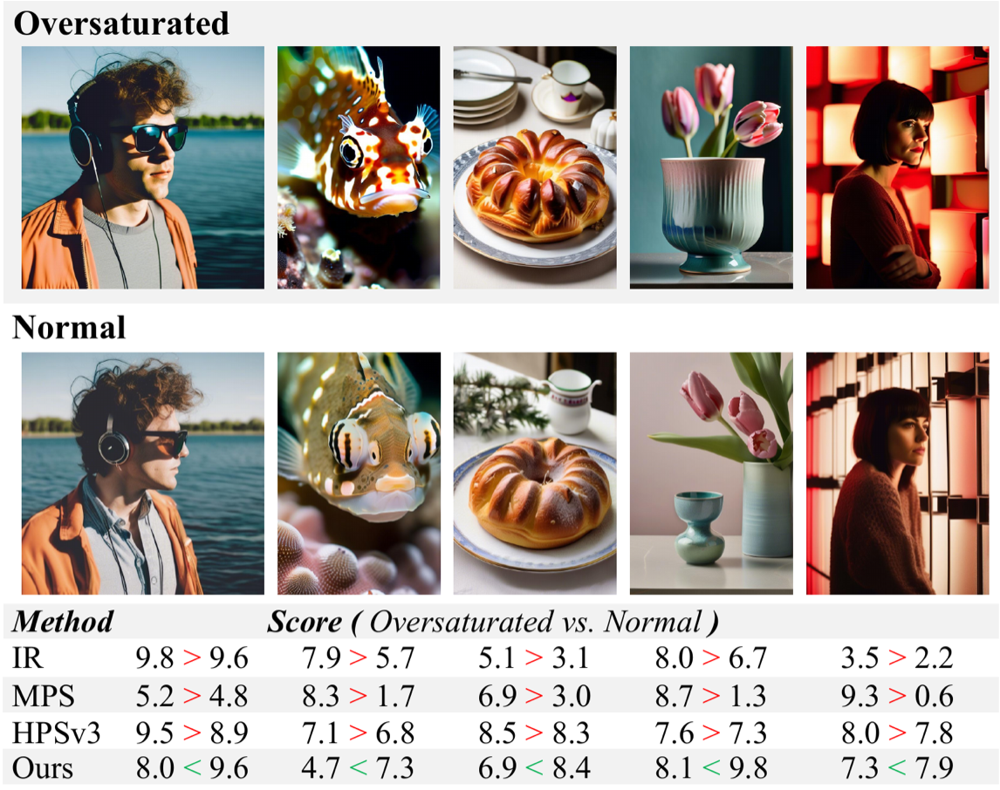
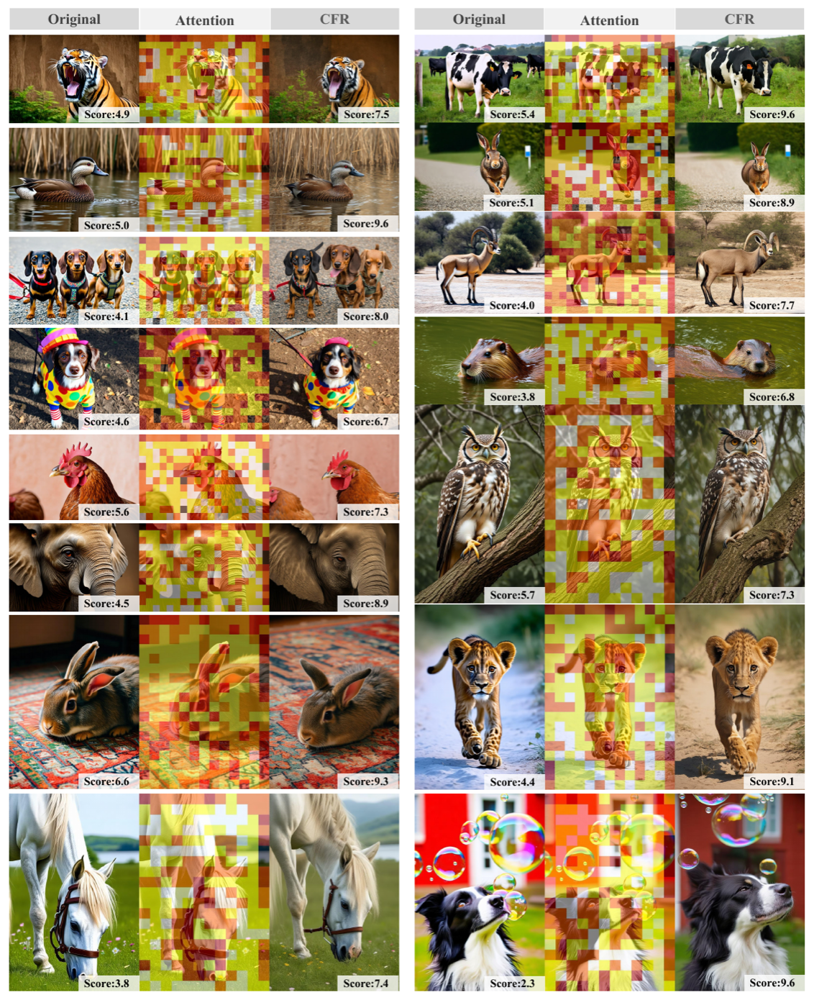

Recent advances in text-to-image (T2I) generation have greatly improved visual quality, yet producing images that appear visually authentic to real-world photography remains challenging. This is partly due to biases in existing evaluation paradigms: human ratings and preference-trained metrics often favor visually vivid images with exaggerated saturation and contrast, which make generations often too vivid to be real even when prompted for realistic-style images.
To address this issue, we present the Color Fidelity Dataset (CFD) and the Color Fidelity Metric (CFM) for objective evaluation of color fidelity in realistic-style generations. CFD contains over 1.3M real and synthetic images with ordered levels of color realism, while CFM employs a multimodal encoder to learn perceptual color fidelity. In addition, we propose a training-free Color Fidelity Refinement (CFR) that adaptively modulates spatial-temporal guidance scale in generation, thereby enhancing color authenticity.
Together, CFD supports CFM for assessment, whose learned attention further guides CFR to refine T2I fidelity, forming a progressive framework for assessing and improving color fidelity in realistic-style T2I generation.

CFD is a large-scale dataset specifically designed to model and quantify color authenticity in realistic-style T2I generation. We collect 189,490 high-quality real-world photographs spanning 12 categories (humans, natural scenes, urban environments, etc.) as the perceptual upper bound of color fidelity. Each image is captioned with a vision-language model and re-synthesized by 11 different T2I models under progressively increased classifier-free guidance (CFG) scales, yielding synthetic variants with progressively distorted color fidelity while preserving semantics.
Each real image is paired with six synthetic variants, forming a color-fidelity sequence of seven images. In total, ~190K groups (1.33M images) are constructed and split into CFD-Training (160k groups), CFD-Test (30k groups), and CFD-Human (over 20,000 ratings on 6,690 images, average inter-rater Spearman > 0.85).

Since the perception of "realistic color" depends on contextual and compositional content,
CFM is built on a Qwen2-VL vision-language backbone that jointly encodes visual and
textual tokens. An MLP head maps the special <|Reward|> token output to a
scalar fidelity score SCFM, where higher values indicate stronger alignment
with real-world color statistics.
CFM is trained with a differentiable softrank loss that exploits the inherent ordinal structure of CFD groups (one real reference + six synthetic variants of monotonically decreasing fidelity). Pairwise sigmoid probabilities yield differentiable soft ranks; an MSE between predicted and ground-truth ranks provides stable supervision over the perceptual ordering, encouraging higher scores for realistic images and penalizing over-saturated ones.
Beyond evaluation, we extend the benchmark into a practical enhancement pipeline. CFR is a training-free, plug-and-play refinement compatible with any diffusion-based T2I model. It leverages cross-modal attention from CFM to identify regions with high color–semantic discrepancy, and adaptively modulates the denoising guidance scale both spatially and temporally:
st(u, v) = s0 · [ 1 − λ · α(t) · a'(u, v) ]
where a' is the upsampled per-pixel attention map, α(t) = 1 − t/T is a temporal decay factor, and λ controls modulation strength. The effective guidance is suppressed in regions exhibiting color–semantic discrepancy (typically over-saturated areas) while remaining close to the base scale elsewhere — correcting colors without compromising semantic consistency or modifying any model parameters.

Color-fidelity ranking of 11 representative T2I models. Recent SRPO achieves the highest CFM (9.05); Qwen-Image and Flux-dev are competitive, while aesthetics-driven models (e.g., Playground-v2.5) trade off color authenticity. CFM achieves over 80% pairwise discrimination accuracy on CFD-Test and the highest correlation with human judgments (Spearman / Pearson / Kendall) across all baselines.

Existing aesthetic and preference-trained metrics (PickScore, ImageReward, HPSv3, MPS…) are systematically biased toward vivid, high-contrast images. CFM, in contrast, assigns higher scores to images with naturally balanced and authentic colors.

Plug-and-play refinement on multiple diffusion backbones. CFR suppresses over-saturation and contrast imbalance, producing more natural and perceptually harmonious images while preserving the semantic content of the original generations.
@inproceedings{cfm2026toovivid,
title = {Too Vivid to Be Real? Benchmarking and Calibrating Generative Color Fidelity},
author = {Zhengyao Fang and Zexi Jia and Yijia Zhong and Pengcheng Luo and
Jinchao Zhang and Guangming Lu and Jun Yu and Wenjie Pei},
booktitle = {Proceedings of the IEEE/CVF Conference on Computer Vision and Pattern Recognition (CVPR)},
year = {2026}
}